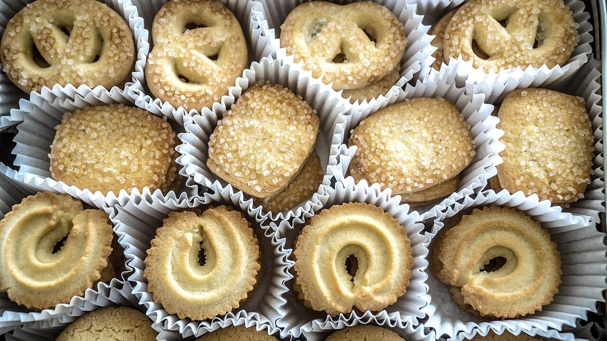

制作側の連想
「りぴーと」と円筒の、ぐるぐる
屋号の由来は分かりません。制作側は「りぴーと(くり返し)」という響きから、トラックを何周も回るラップ計時の掲示板を連想しました。シフォンの円筒型を上から見ると輪になる、という連想も重ねています。そこでこのサイトは5ページを「LAP 1〜5」と数え、1周ごとの区間タイムのように並べました。お店の理念や由来とは無関係な、制作側の連想です。
くり返す円
丸いものを、並べてみる。
写真は国外・撮影地不明のフリー素材のイメージで、お店の商品ではありません。




ご案内
確認できていること
| 所在地 | 〒313-0125 茨城県常陸太田市大里町2636-2 |
|---|---|
| 電話 | なし |
| 営業時間 | 準備中 |
| 定休日 | 準備中 |
| ご予約 | 準備中 |
| 駐車場 | 準備中 |
| SNS | Instagram @rico2024.aaa |